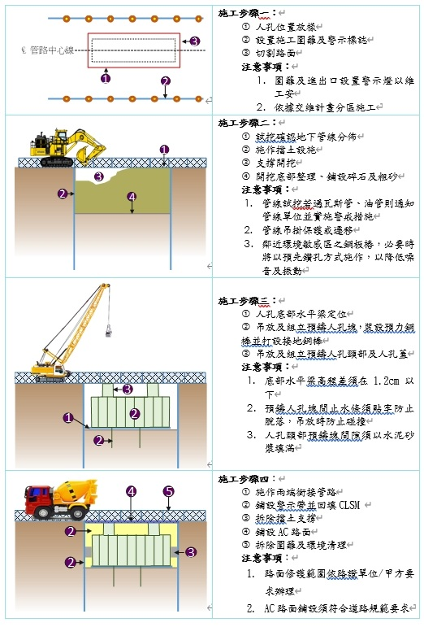
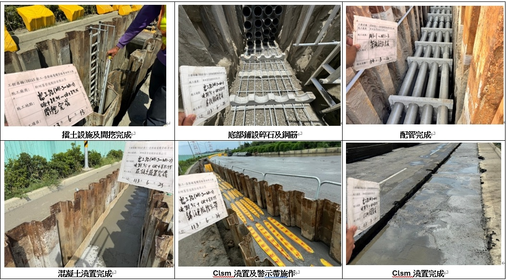
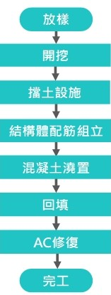
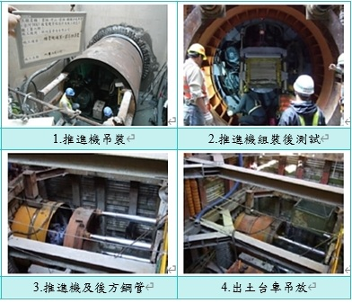
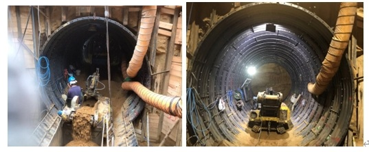

台電工程介紹
本公司承攬台電電纜管路與地下結構工程，結合創新工法與智慧監測，確保工程品質、安全與工期。
預鑄人孔施工流程
採用預鑄混凝土人孔組塊，快速安裝、結構穩固，提供電纜接續、檢修與維護之安全空間。


整體式微創工法預鑄型人孔蓋

明挖管路施工流程
明挖／推進／隧挖等工法，鋪設 PVC / HDPE 導管並以 CLSM 等材料回填，確保電纜輸送安全與耐久性。


場鑄涵洞施工流程
現場施作鋼筋混凝土涵洞或預鑄 T 型涵洞，提供主幹管線的高強度保護通道。


潛鑽施工流程
採非開挖潛鑽（HDD）與密閉推進技術，穿越道路與河道以降低對交通與環境的影響。

推進工程施工流程
採密閉管道推進技術，穿越道路或河川，減少開挖與施工對環境的影響。

隧挖施工流程
採隧道掘進技術施工地下管線，有效減少地面干擾與交通影響。
